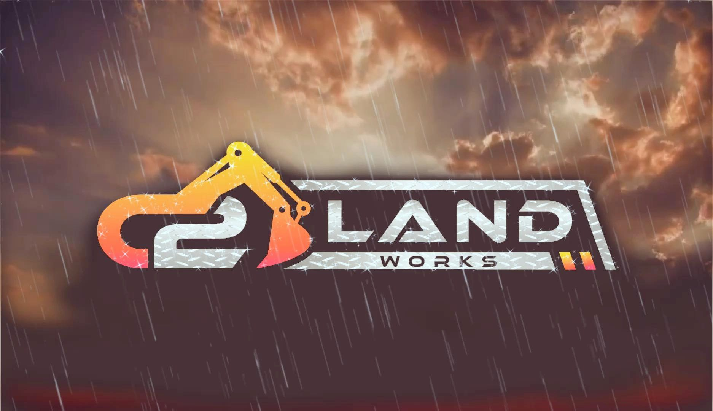

From our specialty meat market featuring 1855 Black Angus Beef to professional on-site catering and game processing, we bring the heart of Cajun country to Southeast Texas.
We combine traditional Cajun craftsmanship with the highest grade ingredients.
Featuring 1855 Top Black Angus Beef and custom cuts tailored to your exact preference.
Full-service catering for corporate events, weddings, and crawfish boils of all sizes.
Professional deer and exotic game processing with a focus on precision and hygiene.
Rotating weekly menus of authentic Cajun comfort food, made fresh every single morning.

Founded by Jacob Junot, Cajun Ventures, LLC is more than a market—it's a commitment to the culinary traditions of the Bayou. We specialize in premium American-raised beef and house-made boudin, ensuring every bite is a tribute to authentic Cajun flavor.
Learn More About Us